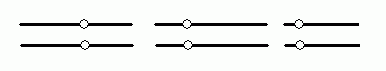
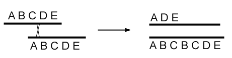
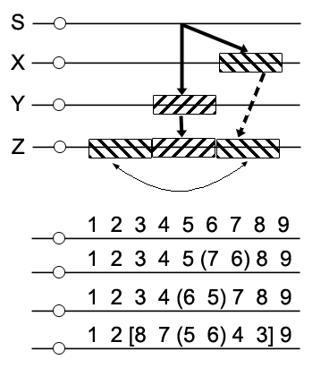

Genetics 100B
Cytogenetics
&
Population Genetics
The following is a transcription of notes taken by S. M. Halloran
when he was an undergraduate student at the University of California
at Davis.
The lectures were given by Professors Prout and Turelli. The dates of the
lecture are noted.
8 Jan 1980
Course is graded on two midterm examination worth 30% each and a final
examination counting for 40%.
Cytogenetics
Cytogenetics is a study of the variation of chromosome number and
structure. In the figure below is a representation of three paired
chromosomes with their centromeres shown.

The diploid (left or top) and gametic (right or below)
representations would be as in the figures below. Note that gametic might be
called haploid, if the gametic and haploid are the same.
Variation in chromosome number is represented in the figure below, where
the set of chromosome numbers can be a single set of unique chromsomes, but
then duplicated or triplicated. Or some of the chromosomes can be triplicated
and other duplicated.
Variation in chromosome structure is represented in the figure below.
Segments or parts of chromosomes might be re-arranged in various ways.
Segments of one chromosome might be moved to another chromosome.
Variations in chromosome structure can and often arise in the processes of
mitotis and meiosis, and cytogenetics is concerned with analyzing these
variations on a chromosome level or scale.
Number Variation
Polyploidy is a term given to what the number is of a basic set of
chromosomes, and important the ability to create multiple integer numbers of the
basic set naturally or by engineering of some type (through plant breeding or by
biochemical or molecular manipulation).
Consider the banana, which has a haploid set of chromosomes totaling nine,
(x) = 9. These chromosomes provide the minimum number of traits
necessary to express a banana genotypically. The value (x) is the
basic number of chromosomes, which are 9. The value (2x) would be
18 chromosomes. The banana seed actually has a value of (3x) or 27
chromosomes.
The commercial strawberry has (8x) = 56 chromosomes, while its wild
counterpart actually has (2x) = 14 chromosomes, thanks to the
engineering of geneticists. Polyploid forms of plants comes naturally
and can be observed in about 1 in 3 higher plants. This clearly has some
evolutionary advantage.
Two mechanisms may be responsible for polyploidy: unreduced gametes and
somatic cell doubling.
Unreduced Gametes
Using the banana as an example, its reproductive organs contain somatic cells
that undergo gametogenesis. Normally gametogenesis in such cells produce cells
having a haploid character, but if there is no assortment (see abnormal
in the figure), then the gamete formed from the cell still retains diploid
character. Note that cell division occurs, but the other cell is without
chromosomes and will die quickly. If the diploid gamete fuses with a gamete that
formed normally (i.e., is haploid), the zygote is triploid. If the triploid
zygote is viable, it produces an organism retaining that character. Note that
cells that are 2n for all chromosomes are diploid, and those with 3n for all
chromosomes are triploid. Diploid and triploid cells or organims can be
described as euploid (in which all chromosome numbers are an exact multiple
of the monoploid state n).
When the triploid organism matures and produces its own gametes, the chromosomes
can assort abnormally, with a mixture of diploidy in some chromosomes and
haploidy in for other chromosomes. This condition is aneuploidy since
some of the chromosomes in a gamete are 2n and others n. The
gametes are referred to as aneuploids. It might even be possible that
one gamete has none of one type of chromosome, and its sister gamete has all
three chromosomes.
The figure above shows three chromsomes forming the genome. The haploid state
is just one copy of a chromosome, while the diploid is two copies, and the
triploid is three copies. In forming gametes from a triploid organism, suppose
that the only possible assortment is one copy of a chromosome to one gamete and
two copies to the sister gamete. Thus of the two gametes that form, the probability
is ½ that a gamete gets one or two copies of a chromosome. For a
three-chromosome genome, the probability of a gamete have diploidy for two
of the chromosomes and haploidy for the third chromosome would be
½ × ½ × ½ = 1/8. For a banana having
a 9-chromosome genome, the probability of having any particular karyotype will
be (½)m, where m is the number of chromosomes.
Thus the probability that a gamete has two of chromosomes #1, #4, #5, #6 and
one of chromosomes #2, #3, #7, #8, and #9 is (½)9 =
1/512.
What is the significance of aneuploidy? What happens when aneuploidy gametes
fuse with other gametes? Is the organism viable? Consider the zygote
of an aneuploid gamete and euploid (haploid) gamete (see figure immediate above).
The observation in nature is that metabolic or structural disorders occur.
In plants formation of aneuploid gametes does not continue to the formation of
mature pollen grains. And it is odd-numbered euploids (triploids, pentaploids,
heptaploids) that would yield aneuploid gametes by necessity.
Somatic Cell Doubling
In gametic reduction, the process of meiosis leads to the division in which
ploidy is reduced by half, and gametes form which then join to result in
either the euploid or aneuploid state.
 With somatic cell doubling, changes in ploidy no longer involve defects in
meiosis, but rather a defect in mitosis. In the figure, a 3-chromosome
genome with each chromosome pair named a, b and c lines up
on the mitotic axis (metaphase plate). Normally the sisters of the pairs move
one to each daughter cell. But in the figure both pairs of chromosomes a
and b move to a daughter, while chromosome c separated normally to
both daughter cells. Both gametes are technically aneuploid, with one gamete
showing tetraploidy for chromosomes a and b.
With somatic cell doubling, changes in ploidy no longer involve defects in
meiosis, but rather a defect in mitosis. In the figure, a 3-chromosome
genome with each chromosome pair named a, b and c lines up
on the mitotic axis (metaphase plate). Normally the sisters of the pairs move
one to each daughter cell. But in the figure both pairs of chromosomes a
and b move to a daughter, while chromosome c separated normally to
both daughter cells. Both gametes are technically aneuploid, with one gamete
showing tetraploidy for chromosomes a and b.
Colchicine is a plant alkaloid which interacts with microtubules.
Microtubules are filamentous structures that form inside eukaryotic cells and
are responsible for many functions of the cells, such as motility. Microtubules
are a major part of the cytoskeleton. In addition, microtubules are required
for mitotis, which is the process by which a cell properly replicates its genome
(DNA) and then distributes one of the two copies to daughter cells during cell
division as part of the organism's survival, or growth and development.
Microtubules extend from the asters on either side of the chromosomes aligned on
the metaphase plate, and the attach to the centromeres of each chromosome. If
anything affects proper microtubule function, mitosis might proceed abnormally.
An abnormal process in particular could lead to both of the homologous
chromosomes going to one daughter cell (the other getting none, if another
daughter cell even forms). Colchicine stops microtubules from functioning
properly, and so a diploid cell forms a tetraploid cell (genome replication
without formation of daughter cells). Colchicine applied to meristematic
tissues (root cells) produce cells showing eupolyploidy.
Given a tetraploid having chromosomes a, b, and c, suppose
its cell undergoes meiosis. In the first prophase, recombination occurs for
each of the four copies of the homologous chromosomes. Now a
quadrivalent, in which the chromosomes will go into one daugher cell, and
not the other. Yet another possiblity is a trivalent and a univalent in the
homologous chromosomes. Or yet another is a bivalent formed, with each daughter
cell to get equal content of that homologous chromosome. What is often observed
in tetraploids is an alignment that leads to diploid gametes for all chromosomes.
10 Jan 1980
Suppose in looking at the fruit of certain dicotyledons (bananas and
strawberries), the question arises why large seeds have not been discovered.
These would be polyploids. If large seeds do not form, it is likely because it
forms abnormal fruit and such fruit would be culled out.
Euploidy
| | Gametes
|
|---|
| 1. Monoploidy | X | 0
|
| 2. Diploidy | X | X
|
| 3. Polyploidy |
|
| a. odd |
|
| b. even | ½pX
|
Consider the watermelon, which is reproduced sexually, and not asexually
like the banana. If a 4X watermelon, which is stable (viable), produces gametes
of 2X, and a 2X watermelon, which produces 1X gametes, are crossed, a 3X
triploid is expected. Indeed it forms, but the 3X watermelon produces no
seeds. Since seedless watermelons are desired by consumers, it makes sense
for plant breeders than to cross tetraploids and diploids to produce the
triploids, which are sterile but delicious.
Recall that in the strawberry, a commercial type is 8X and the wild type
is 2X. Their gametes should thus be 4X and X for the commercial and wild
type respectively. If they are crossed, 5X progeny should be the result.
This odd ploidy should again produce gametes that will form no seeds.
Some important new terms should be learned. Autopolyploidy is polyploidy
that occurs from within a species by a process such as gametic reduction in
meiosis or by somatic cell doubling in mitosis. Thus a 2X cell or organism
forms a 4X form of itself by these processes, or a 4X forms an 8X form of
itself.
In contrast, allopolyploidy results from an interspecies crossing,
such as an 6X species with 3X gametes joining the 1X gametes from a 2X species
to form a 4X (tetraploid) that is a new species but with homologous chromosomes
of the two others.
In the figure below, allopolyploidy is demonstrated. Species A and B formed
from an ancestor as their genomes diverged. They retain the sets of homologous
chromosomes (a belonging to A, b belonging to B). And so a
diploid gamete of A is crossed with diploid gamete of B to form a tetraploid
progeny which can be described as AABB. This is effectively a new species.
Suppose the new species resulted from an A × B crossing, which are haploid
gametes. The new species would be symbolized cytogenetically as the figure
on the right. Gametogenesis by this progeny will almost certainly result in
aneuploidy. If the progeny, composed of haploid chromsomes, underwent something
like somatic cell doubling, the species would then be diploid, but with a larger
genome. Such a diploid species would then produce euploid gametes and
the successive progeny are euploid as well.
Four polyploidy experiments are described achieved by allopolyploidy.
The first is a cross between a cabbage (Brassica olaracea) and radish
(Raphanus sativa). Both are from the same family but different genera.
The figure at left shows the scheme. The cabbage and raddish both have 9
chromosomes (2X = 18). They generate hapoid gametes (R and C) which are then
crossed. But the chromosomes are in the haploid state in the progeny. So
a colchicine-induced somatic cell doubling is done to produce polyploidy
and achieve the diploid state, which will produce gametes that provide viable
progeny: Raphanobrassica, or the rabbage.
In the second experiment, tobacco (Nicotiana) has three species. The
species N. tomentosa has a diploid 2X = 24, and its genome is symbolized
TT. N. sylvestrus also has diploid 2X = 24 and is symbolized SS. The
species N. tobaccum is actually the cultivated variety, and it shows 48
chromosomes. Could its representation be TTSS, that is, a diploid cross of the
other two species?
To test this, a TT × TTSS cross should produce 12 bivalent and 12
univalents in the progeny karyotype, representing a TTS genome, as shown in the
figure at left below.
With a SS × TTSS cross, a TSS genome. And a
TT × SS should produce the diploid TS genome, with no bivalents and
24 univalents. All progeny should be sterile. With the TS genome, a somatic
cell doubling should produce TTSS. If its phenotype is like N. tobaccum,
then it suggests that N tobaccum arose in this way, as an allopolyploid
cross between N tomentosa and N. sylvestrus.
In a third experiment, the genus Tragopogan (goat's beard) includes
three species: T. dubius, T. porrifolius, and T. pratensis.
These are diploid types whose flower colors are pale yellow, purple, and
chrome yellow, respectively. If T. dubius and T. pratensis
have their diploid gametes crossed, the 4X progeny can then be used to create
2X progeny which have phenotypes of T. dubius and T. porrifolius,
indicating how much of the genome is shared.
Finally in a fourth experiment, cord grass is composed of an American type
(2X = 70) and a European type (2X = 56). The alloploid from this is XY = 126.
It does not possess the same mulitple sets of chromosomes (homologues) and
so these species of cord grass are amphiploids.
15 Jan 1980
In the previous lecture there was a discussion of two species with genomes
AA and BB.
The classic case, shown in figure at left, is to cross the haploid gametes of
two species, and then take the progeny with its karyotype of univalents and
induce diploid in the somatic cell (using antimitotics).
This method can be repeated to add more chromosomes to the genome from different
species (see figure right).
Genomes A and B were combined and formed into a diploid state (AABB), and their
gametes combined with a CC diploid gamete to form again a haploid species (ABC)
which was then made diploid (AABBCC) by somatic cell doubling.
An allohexaploid in bread wheat was generated in this way. Suppose the
original wheat is genome AA (X = 7, 2X = 14). This is combiined with other
forms of wheat (genomes BB and CC) with X = 7, to produce AABBCC (2X = 42).
Polyploidy is generated quite naturally by a species under evolutionary
control or stress to adapt to a different environment, although the result is
that chromosome structure changes very little in order to make the adaptation.
In the figure below, ancestral genome C evolves divergently to form genomes
X and Y, which retain the same number and generally the structure of the
chromosomes of genome C. X and Y gametes cross. One of the chromosomes
retain homology, so these line up on metaphase in mitosis, while the others
do not. The XY will show four univalents and one bivalent.
Genetics of the Polyploid
Suppose a self cross is performed with heterozygous diploids. This means that
for locus A on a chromosome, the Aa ×
Aa cross is done. The progeny have an expected 3:1 phenotypic
ratio for diploids. But for tetraploids, their haploid gametes produce six
possible fertile diploid types (seen in figure above: note the subscript
refers to the particular distinguishing chromosome, even though the allele
is identical). All gametes compositions are equally probable, thus a probability
of 1/6.
Punnett Square
Tetraploid Selfcross
| male
|
|---|
|
| AA
1/6
| Aa
4/6
| aa
1/6
|
|---|
f
e
m
a
l
e
| AA
1/6
| AAAA
1/36
| AAAa
4/36
| AAaa
1/36
|
|---|
Aa
4/6
| AaAA
4/36
| AaAa
16/36
| Aaaa
4/36
|
|---|
aa
1/6
| aaAA
1/36
| aaAa
4/36
| aaaa
1/36
|
|---|
If allele A is dominant to a, the phenotype ratio will be
35:1 (or 35 in 36) for tetraploid heterozygote crosses compared to the 3:1 (or
27 in 36) for the crossing of diploids.
The above cross is an autotetraploid. For an allotetraploid, species X and Y
have two different genomes but have a similar gene A. But other genes are
not similarly ordered or sequenced, and so no pairing occurs.
When alloploids are formed, the homologous chromosomes must group in order to
get the alleles of gene loci designated in a single group symbolically. For
example, in the figure, which has two A alleles and two a
at the gene locus, this would be symbolized AAaa in the genotype if it
were a tetraploid, and the chromosomes grouped as quadrivalents.
But since the chromosomes group as bivalents despite a four alleles of one gene
locus, the designation must be different. And so the designation for the locus
is Aa,Aa. Note the comma.
If a self cross is done on these alloploids, the gametes assort as follows:
- A1, A2
- A1, a2
- a1, A2
- a1, a2
The progeny genotypes are:
Allopolyploid Selfcross
| male
|
|---|
|
| A1, A2
1/4
| A1, a2
1/4
| a1, A2
1/4
| a1, a2
1/4
|
|---|
f
e
m
a
l
e
| A1, A2
1/4
| A1A1, A2A2
| A1A1, a2A2
| a1A1, A2A2
| a1A1, a2A2
|
|---|
A1, a2
1/4
| A1A1, A2a2
| A1A1, a2a2
| a1A1, A2a2
| a1A1, a2a2
|
|---|
a1, A2
1/4
| A1a1, A2A2
| A1a1, a2A2
| a1a1, A2A2
| a1a1, a2A2
|
|---|
a1, a2
1/4
| A1a1, A2a2
| A1a1, a2a2
| a1a1, A2a2
| a1a1, a2a2
|
|---|
Since there are 16 possible genotypes, each has a 1/16 probability of being
in the progeny. Since allelic dominance is a factor, there is a 15:1
phenotypic ratio for A:a.
Aneuploidy
Aneuploidy refers to variations in chromosome number, which is other
than each homologous chromosome being equal in numbers as multiples.
It will be recalled that an odd-numbered euploid organism will generate
aneuploid gametes that then will produce non-viable zygotes. Of course
aneuploid zygotes can even occur when there is even-numbered ploidy
in the parent. In diploids, if non-disjunction of one or more paired
homologues occurs, aneuploidy results. This should not be confused with
gametic nonreduction: in that event, all chromosomes are separated to
one daughter cell, and none to another (if it is even generated);
that daughter becomes a gamete. In non-disjunction, only some and not
all of the chromosomes are affected.
Aneuploidy can be seen in three example species.
Datura stramonium (jimson weed)
The diploid plant has 24 chromosomes (X=12, n=12, 2X=24,
2n=24). All 12 chromosomes are designated by letters A to L.
Trisomic groups have been observed for each chromosome, although triploidy
has not been seen. In trisomy for a particular chromosome, there is an
effect on the seed capsule. This capsule is called the thorn aapple, and on
its body there are mulitple echinus (thorns). Changes in the thorn
appearance or structure vary by the different trisomics possible. These
are not allelic differences, but rather the effects of trisomy. Trisomy-B
(that is the B chromosome which is trisomic) produces a small glossy
thorn apple with small echinuses.
Homo sapiens (humans)
With 46 diploid chromosomes, numbered (rather than lettered) by cytogeneticists,
the most significant and well-known effect of aneuploidy is Down's syndrome,
or G-trisomy #21. The Down's syndrome individual suffers from mental
retardation usually but is of good-natured character. Some physical
deformities are evident, and life expectancy is only 35-40 years.
Trisomy 13 occurs in 1 in 10,000 births. The individual is afflicted with
Patau's syndrome. In most cases the fetus does not thrive and miscarriage
occurs. Some do survive beyond birth and there are multiple disorders and
developmental abnormalities affecting all the body systems. Trisomics are
observed in chromosome 18, which causes Edwards syndrome. Most other trisomic
and all monosomic conditions result in prenatal abortion.
Drosophila melanogaster (fruit or vinegar fly)
Geneticists designate its four chromosomes using roman numerals. The figure
shows the approximate position of the centromeres for the four chromosomes.
Trisomics for IV have been observed, but they appear normal. Trisomy in
chromosomes II and III are inviable. In general, where trisomy involves the
smallest chromooomes of the genome, viability is not a problem.
17 Jan 1980
The discussion of aneuploidy in three species was the stopping point in
the previous lecture. In looking at Drosophila it is observed that
only some trisomics in this species survives. The triploid species survives
as well.
|
| C
½
| C
½
|
|---|
CC
½
| CCC
¼
| CCC
¼
|
C
¼
| CC
¼
| CC
¼
|
|---|
Suppose that there is gene C whose locus is found on a trisomic
chromosome set in an otherwise diploid species (see figure). Examine the cross
for this aneuploid and a normal diploid: CCC × CC. The
gametes and probabilities and the resulting cross shown in the table at the
right shows that half the phenotype is trisomic and half is normal. With Down's
syndrome, this sort of segregation is observed based upon the expectations of
this genetics, but the disorder symptoms may arise or be suppressed depending on
the environmental influences. Clearly the trisomic condition results from a
non-disjunction during formation of either the maternal or paternal gamete.
Consider the glossy variety of the Datura jimson weed which shows
trisomy for B (24 + B). Gametes will be produced with either
BB or B along with normal haplosomes. Gametes are normally
degenerate in the abnormal aneuploids, which is an effect of an autosome.
In this case, the resulting zygote will almost always be nonviable or abnormal.
| Genotype | Drosophila | Mammals
|
|---|
| XX | female | female
|
| XY | male | male
|
| XO | sterile male | sterile female
Turner's
(4 in 10,000)
|
| XXY | fertile female | sterile male
Klinefelter's
(1 in 1000)
|
Abnormalities with sex chromosomes are not as potentially lethal as autosomal
abnormalities. Sex determination is shown for the normal. The Y chromosome
absolutely determines maleness in mammals. Two X chromosomes and only two
X chromosomes determine femaleness. Consider the crossing in Drosophila
of a normal male (XY) and fertile female with karyotype XXY. The latter
can produce four possible gametes as shown in the square (table below).
|
| XX
1/6
| Y
1/6
| XY
2/6
| X
2/6
|
|---|
X
½
| XXX
1/12
| XY
1/12
| XXY
1/6
| XX
1/6
|
Y
½
| XXY
1/12
| YY
1/12
| XYY
1/6
| XY
1/6
|
|---|
Note the probability of gamete formation. In determining the scheme of gametes,
there are two X, so technically the karyotype is X1X2Y,
and so the gametes form X1X2 | Y,
X1Y | X2, and
X2Y | X1. Thus of the six possible gametes,
there are two XY and two X gametes, and one of the other two kinds, which
explains the probabilities in the tables.
The YY genotype will not be viable, since an X chromosome is required. The
XX, XY, XXY, and XYY genotypes will survive. The XXX phenotype lives but develops
no sex organs despite being female in character. Thus there are four
viable phenotypes in which the ratio will be 3:3:2:1 for XY:XXY:XYY:XXX.
 Chromosomal non-disjunction can occur either in the first or second division of
meiosis or mitosis. An XYY karyotype for example might result when there is an
NDJ in the second division of spermatogenesis. Clearly the X and Y bivalents
assorted properly in the first division, but sister chromatids failed to
separate from the centromere in the second.
Chromosomal non-disjunction can occur either in the first or second division of
meiosis or mitosis. An XYY karyotype for example might result when there is an
NDJ in the second division of spermatogenesis. Clearly the X and Y bivalents
assorted properly in the first division, but sister chromatids failed to
separate from the centromere in the second.
What about dominance? Suppose the following monogenic phenotype in which seed
color is green with W_ and white with ww. Suppose a homozygous
trisomc green parent crosses with a recessive disomic. The F1
generation is a heterozyote which is either disomic or trisomic:
P: WWW × ww
F1: WWw and Ww
In a test cross of the F1 progeny which are trisomics
(W1W2w ×
W1W2w), each
will produce six possible gametes in the trisomic. The resulting genotypes are
WWw, Www, Ww, and ww. In fact genes are mapped thusly
by crossing and then counting the number of phenotypes using recessives and dominants.
An experiment by Bridges using Drosophila was done crossing to look at
genes on the sex chromosomes. A locus on the X chromosome confers a red
eye color if the allele is XW, which shows dominance, and a
white eye color if allele is Xw which is the recessive. Now
consider a white-colored female (XwXw) is
crossed with red-colored male (XWY). The phenotypes of
the next generation will be nothing but red-colored females
(XWXW and XWXw)
and half the males red (XWY) and half white
(XwY). These kinds of ratios, if observed, thus
show sex chromosome-linked inheritance. In some cases Bridges observed a
white female and this must be explained by a nondisjunction event. To test this
the white female would have to be crossed with a white male to observe what might
be happening.
22 Jan 1980
Human Gene Mapping and Hybrid Cells
A special technique used in genetics is the culturing of human cells and the
fusion of their nuclei with the nuclei of mouse cells. These hybrid cells
are capable of dividing and growing, and the mouse (2n = 40) and human
(2n = 46) chromosomes all line up at metaphase. But when mitosis
completes, the human chromosomes are not seen in the interphase nucleus
and their DNA strands are destroyed. Curiously on the mouse genome is retained
and replicates.
Part II of Cytogenetics: Chromosome Structure
In the first part there was a concern about chromosome number and the effects
of changing it. In this part the concern is with the structure of a chromosome
itself and the effects of its abnormalities.
A deficiency of a chromosome, apart from the concept of deletions, is
when a piece of a chromosome is lost because of any of the following.
- unequal crossing over:
- chemical or physical damage
- chromosomal structural changes: translocations, inversions, duplications
Deficiencies can be examined as nullisomic (homozygous) or monosomic. For
instance in the figure the chromosome pair labeled 1, some genes are
missing in one chromosome, but the other homologue possesses alleles that still
allow for survival of a deformed phenotype. In chromosome pair 2, the
individual would die but might survive if the deficient region codes for less than
1/40 (2.5%) of the genome. For example, the notched wing phenotype in
Drosophila is the result of a complete deficiency of a gene locus.
In humans, there are two cases of heterozygous deficiency. One in chromosome
#13 results in retinoblastoma, a cancer induced in retinoblasts. In
chromosome 5, complete deficiency of one of its parts results in cri-du-chat
syndrome, causing both physical and mental abnormalities in children.
Looking at deficiency in the genetics of sex transmission in Drosophila,
supposed at loci N, the allele N is dominant, and resulting in
a notched wing phenotype discussed earlier. The recessive genotype nn
is the normal or wild-type phenotype. Also described above, the transmission of
a red eye is because of a dominant genotype, R_, and the white genotype
is recessive, rr, and these loci are on the X chromosome.
Thus if a notched-wing female crosses to a male (XNXn
× XnY), the possible genotypes of the progeny are
notched-wing females (XNXn), normal females
(XnXn), and normal males (XnY).
Notched-wing males (XNY) are also possible, but they are not viable
and so die. A homozygous red-eyed female crosses to a white-eyed male
(XRXR × XrY) and only heterozygous
red-eyed females (XRXr) and red-eyed males (XRY)
are possible.
Bridges found that a notched-wing, red-eyed female crossed to a white
normal male (XR,NXR,n × Xr,nY)
would produces females half of which are white-eyed with normal wings,
the other half red-eyed with normal wings. This attempt at crossing with
sex chromosome-linked traits tries to map the R locus situated in the N
deficiency. Deficiencies can be used to map loci, and this process is known
as deficiency mapping. Thus crossing certain genotypes leads to getting
the locus wanted. Of course this mapping is not possible for unlinked genes.
Duplication
Whereas deficiences can be considered to be hyposomic
expressions,
duplications can be considered to be hypersomic.
Duplications here
are of genes within the structure of the chromosome and do not really refer
to creation of one more in the number of a chromosome. Phenotypically
duplications could very well possibly cause abnormalities, such as developmental
or physical deformities, an early end (death) in the life cycle, or
lethality in embryogenesis (nonviable individuals).
 Since eye pupil shape and color are loci on the X chromosome of
Drosophila, how do duplications of these genes affect the fly? The
figure above shows the result. On the left is the normal wild-type, with
round-shaped eye as a result of the monogenic locus B. If there is a
duplication on one of the chromosomes to give digenic B, eye shape is
changed in the phenotype (center drawing above); the phenotype is heterozygous
for the duplication. If the duplication occurs on the other chromosome on the
diploid, which easily occurs in the next generations of flies, then the eye
shape becomes elliptical.
Since eye pupil shape and color are loci on the X chromosome of
Drosophila, how do duplications of these genes affect the fly? The
figure above shows the result. On the left is the normal wild-type, with
round-shaped eye as a result of the monogenic locus B. If there is a
duplication on one of the chromosomes to give digenic B, eye shape is
changed in the phenotype (center drawing above); the phenotype is heterozygous
for the duplication. If the duplication occurs on the other chromosome on the
diploid, which easily occurs in the next generations of flies, then the eye
shape becomes elliptical.
Once a duplication arises, there is a higher frequency of additional duplication
because of mispairing that occurs during homologous recombination (figure at
right). Notice that the recombined result will produce triple gene (ultrabar)
in one gamete, and just the one R on the other gamete, which is basically
a revertant to the normal. The former is likely to die, but the revertant
should be viable.
Adult human hemoglobin (Hb) is composed of two types of single chain proteins,
α and β, and two of each come together to form a heterotetreamter
which is the functional hemoglobin protein, and each of the four are capable of
carrying a single oxygen molecule. The interesting thing is that although the
α and β chain provide the same biological function, they have a
different structure (amino acid sequence). To have a different amino acid
sequence suggests separate codings, and separate genes (an alternative would be
spliced genetic elements during posttranscriptional processing).
Indeed, when looling at the map of the chromosome that holds the Hb locus, the
genes for the α and β strands can be found and identified (see figure
above right). What is also identified are genes in between them, with highly
similar sequences. These genes are actually forms of hemoglobin that are
expressed during embryonic and fetal development, with other forms just
postnatally (figure at left). Thus the Hb composition is different at different
developmental stages, and adult hemoglobin differs from that at earlier ages.
How could these juxtaposed genes making up Hb (and its function) have arisen?
Quite possibly from duplication events.
24 Jan 1980

The duplication of genes occurs quite easily when there is a mispairing or
misalignment of sequences that have high similarity or near identity, and they are
adjacent to each other. But once a duplication occurs, further duplication
becomes more likely since duplicated genes have virtual sequence identity
with one another and misalignment is quite probable.
In the previous lecture, there was a map of the Hb genes. In the map,
the β, δ, and ε forms of Hb were shown drawn a single
chromosome segment. The α gene was shown on another segment. And
in fact, the α gene is not linked to the other three. 90% of adult Hb is
composed of an α2β2 heterotetramer, and
10% is α2δ2.
So how would these duplications arise? Consider that the structure of the
gene for the β and the δ forms of Hb are as shown the figure
at right. Although subregions A, B, C, D are not idential to subregions
W, X, Y, Z, they are quite similar molecularly.
It is observed in some mRNA transcripts that the translated products
result in abnormal hemoglobins. For example, there are hemoglobins such
as Lepore's and anti-Lepore's Hb as shown in the figure. Note that segments
of the β gene seem to be present together with segments of the δ
gene in the Lepore Hb, where the N-terminal part of δ is fused with
the C-terminal part of β. For the anti-Lepore Hb, it is switched:
N-terminal of β is fused to C-terminal of δ.
 Because the subgene regions are similar, a misalignment of the β gene
on one chromosome occurs with the δ gene on other chromosome during
homologous recombination (see figure above). Inheritance of the Lepore
form will result in a nonviable individual (it is a lethal mutation), while
those with the anti-Lepore form of hemoglobin are viable but the phenotype
shows anemia because of the production of the chimeric β-δ Hb
form, which disrupts structure. These chimeric or hybrid forms are revealed
during electrophoresis in hematological analysis.
Because the subgene regions are similar, a misalignment of the β gene
on one chromosome occurs with the δ gene on other chromosome during
homologous recombination (see figure above). Inheritance of the Lepore
form will result in a nonviable individual (it is a lethal mutation), while
those with the anti-Lepore form of hemoglobin are viable but the phenotype
shows anemia because of the production of the chimeric β-δ Hb
form, which disrupts structure. These chimeric or hybrid forms are revealed
during electrophoresis in hematological analysis.
Generally intergenic crossovers which are mispaired while not show
an abnormal phenotype, because the gene sequence is not disturbed and proteins
are thus normal when expressed. But intragenic crossovers as illustrated
above create significant problems. Evolutionary biologists have examined the
β and δ sequences and believe that the δ gene duplicated
from the β gene, probably resulting from when the β and γ
genes mispaired, and a third gene developed.
While a duplicated gene may do no damage to the individual, it will not retain
its function as a gene if it is not truly useful. The fact that the δ
gene retains an active presence suggests it provided a selective advantage
of some kind. It may have been allowed to mutate freely since a destructive
mutation would not result in lethality.
Inversion
Chromosomal inversions are just a re-sequencing on the chromosome that are
caused by the looping of chromosomes. Inversions generally arise as a result of
looping occurring during meiotic or mitotic prophase. In the image above, the
order of genes A through F are changed as a result of inversion. The figure
shows that when the genes all on one arm of the chromosome (namely, with no
centromere separating them), any inversion of their order is
paracentric, where as genes ordered on two arms (across the
centromere) any inversion of their order is pericentric.
The interesting thing is when an individual possesses homologous chromosomes in
which one of the chromosomes is inherited from one parent with the normal order,
and the other chromosome is from a parent in which a paracentric inversion
occurred. During meoisis (anaphase I) to produce gametes from that individual,
recombination with crossover will occur, in which complimentary sequences should
pair. Because of the altered gene order, the homologous strands are more than
likely to produce a loop. If a crossover starts within the loop, chromatids will
be formed in which some genes are clearly missing (deficient) and others are
duplicated (see figure above).
Note that one chromosome forms without a centromere (the one lacking gene A),
which is required for chromosome duplication and ordering during mitosis. Thus
this chromosome cannot make copies of itself and will be lost. The other
chromsosome, with duplicate A genes, has two centromeres (one will probably
disappear with time) and will carry on; the effect of missing E and F genes
may not be lethal if genes are supplied by the other parent, or the complete
absence of the genes is not itself lethal.
Looking the bivalent formation in metaphase/anaphase chromosomes with a
recombination and crossover of two strands (arms) on the homologous chromosomes,
a single arm without a centromere emerges which is severely devoid of all genes,
and a complex looped chromosome structure emerges with two centromeres (figure
immediately above).
With a double crossover event on the same arms, two centromeric chromosomes
result, but with arMs containing a segment with an inverted gene order. When
multiple arms are involved in one, two or multiple crossover events, obviously
the resulting chromosomes and chromatids can become more complicated.
Now consider the pericentric inversion. In meiosis, a loop during homologous
pairing forms, but with the centromeres involved in the looping. The gene order
inversion occurs across the centromere (see figure above). During recombination
only one crossover event occurs with two of the arms (note it occurs between loci
D and E in the figure). The result will be chromatids, both with centromeres, but
with definite deficiencies and duplication of some genes.
Thus, given any two marker loci which show a paracentric inversion (as shown
above), any single crossover event will result gametes in which one gamete
is bicentromeric and the other acentromeric, and with both allelic forms
of one gene on the same chromosome, but on different syntenic loci! If
a double crossover event occurs across one of the loci, then both
genes will be represented (a rescue of the single crossover event occurs), and
both chromosomes are centromeric.
The same is true of a double crossover event between both of
the loci, it is as if no crossover occurred at all between the two loci, and
so gamete chromosomes will form as if no crossover occurred. Pericentric
inversions with double crossoves should yield identical results.
29 Jan 1980
Inversions are observed quite readily in smaller animals. Instances can be
demonstrated where inversions have occurred frequently and the evolution can
be traced.
In the figure above, the gene order between two individuals is observed with the
sequence of one individual on the far left (gene order:
1 2 3 4 5 6 7 ), while that of the other
individual is on the far right (gene order:
1 2 3 6 4 5 7 ). The change in gene order
can be deduced as having occurred with a double inversion event. The first
event is shown in the middle strand of the figure, and then the 2nd event is
seen as the strand on the right.
If an inversion is selectively advantageous, then these kinds of events will
occur at greater frequency and the chromosome will contain inverted elements.

In the figure on the left, chromosome X contains an inverted
(paracentric) sequence, arising from chromosome S spontaneously.
Chromosome Y also arose from S by the same biological processes,
but the inversion is on a different part of the arm. Chromosome Z formed
from Y, when two segments around the inverted sequence in Y switched
positions with each other.
All of these inversions and inversions-on-inversions (pivots) are shown in
the same below the visualization with genes numbeed 1 through 9. And the resulting
order is shown for each inversion.
So how is it assumed that Z arose from Y? It is easy enough to
see that X and Y arose from S. But in any way that X
can be inverted, it cannot yield Z, whereas a single inversion of Y
can produce Z. Thus deducing the order of a number of inversion events
can be tricky.
The interesting thing is how these homologous chromosomes might pair during
meiotic recombination. Chromosome Y (blue strand) would pair with chromosome Z
(red strand) to form a single loop as shown in
the left cartoon of the figure above. If chromosome S (blue strand) should pair with chromosome Z
(red strand), expect the two-loop pairing as
shown in the right cartoon of the figure above. This inversion-on-inversion is
in fact called the Texas inversion, probably because of the knot-like
looping above. The presence of multiple loops in fact suggests multiple
inversion events in a segment. Multiple inversion events are observed within
the third chromosome of Datura pseudoobscura and Datura persimilis.
Comparisons of the ninth chromosome between humans and chimpanzees suggests
the occurrence of a pericentric inversion.
All the lecture content up to the end of this lecture will be on the first
midterm examination.
Translocations
Translocations are chromosomal abnormalities which involve transfers of the
genome from one chromosome to another chromosome. In usual cases, the
transfers are two-way: they involve an exchange of one part of chromosome
1 to chromosome 2, and from chromosome 2 to chromosome 1.
In the figure above, consider two nonhomologous chromosomes. On one end of one
chromosome (telomere) are three genes ( 1 2 3 ) and on
another end of the other chromosome are three genes
( 6 5 4 ). Call this genotype normal (N).
A reciprocal translocation occurs, as in the figure shown, and the gene
order is preserved with respect to direction of telomere to centromere, except
that a segment of one nonhomologous chromosome exchanges with a segment of the
other. But the other of each of the homologous pairs is normal (N), existing
alongside the reciprocally translocated chromosomes (T). Consider this
genotype N/T.
The reciprocal translocation that occurred on the one set of nonhomologous
chromosomes can in fact be repeated with the other pair (or perhaps eventually
emerge in matings with gametes from individuals who contribute forms with
T. Translocations can certainly result in deficiencies when chromosomes
assort independently in ways in which, for example, the chromosome with a deletion
because of singly translocated genes becomes a gamete and then a zygote
in the next generation. The figure below shows how once combination of
assortments can lead to gametes that are abnormal (that is, deficient in
gene loci), whereas another set is normal by the chance of one particular
assortment.

With reciprocal translocations, it is not uncommon to see metaphase chromosomes
pairing with a plus symbol as shown in the figure below.
When chromosomes separate in anaphase, it is possible for two types of disjuction
to occur. Adjacent disjunction occurs when two nonhomologous chromosomes
remain connected. With alternate disjunction
12 Feb 1980
14 Feb 1980
19 Feb 1980
21 Feb 1980
26 Feb 1980
4 Mar 1980
6 Mar 1980
12 Mar 1980
13 Mar 1980